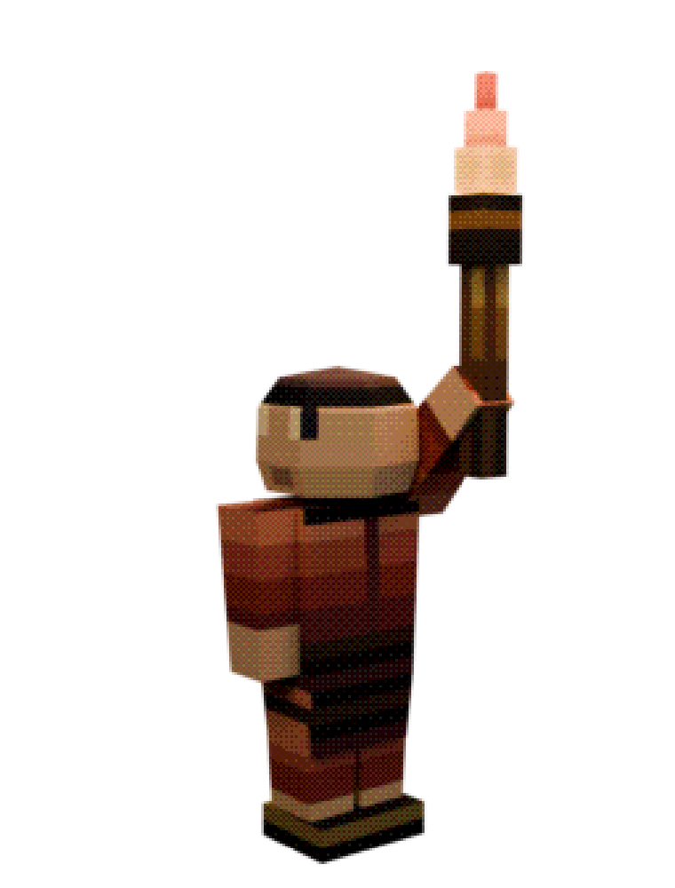
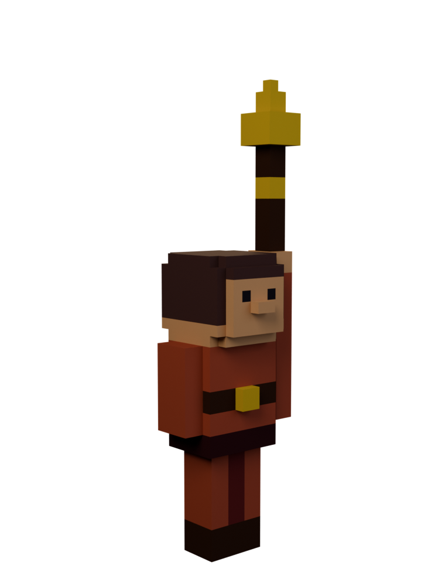
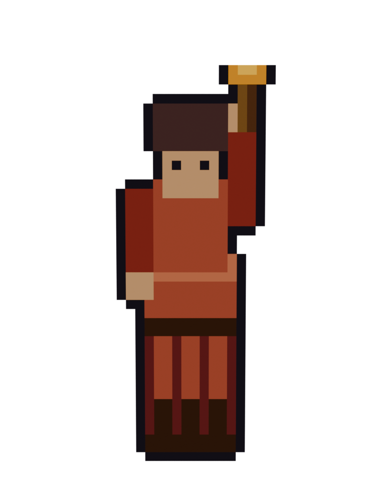
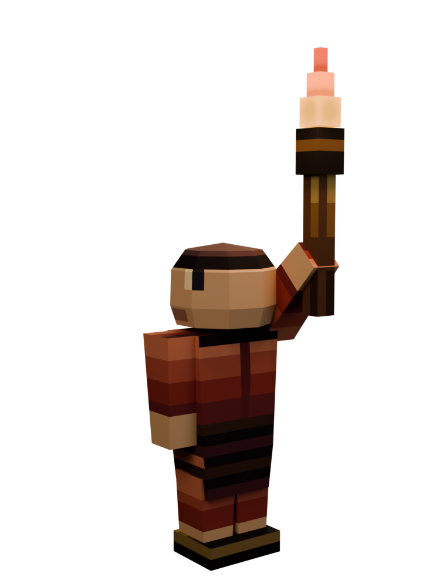
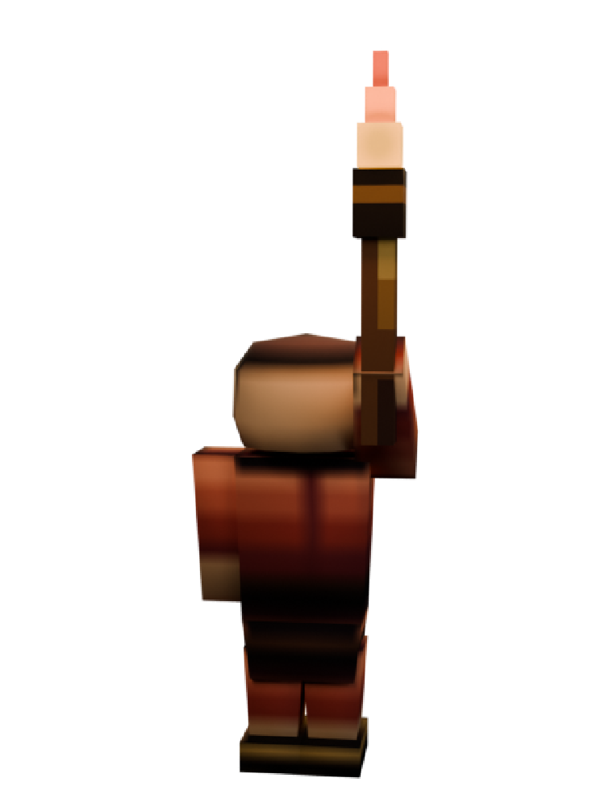

Needs it most. The warp shader changes how the texture reads on the model, so you cannot paint it blind in Aseprite and guess.

There is no UV texture to paint. Saying otherwise would be selling you something the tool does not do.

Texel can paint the sprite sheet in the Image Editor, but there is no model to paint on. This is the one style where a flat card is the right answer.

Identical mechanic: a UV-mapped low-poly mesh wearing a small painted texture. Exactly what the tool is.

Same mechanic as PSX and clean low-poly, on a smaller population.